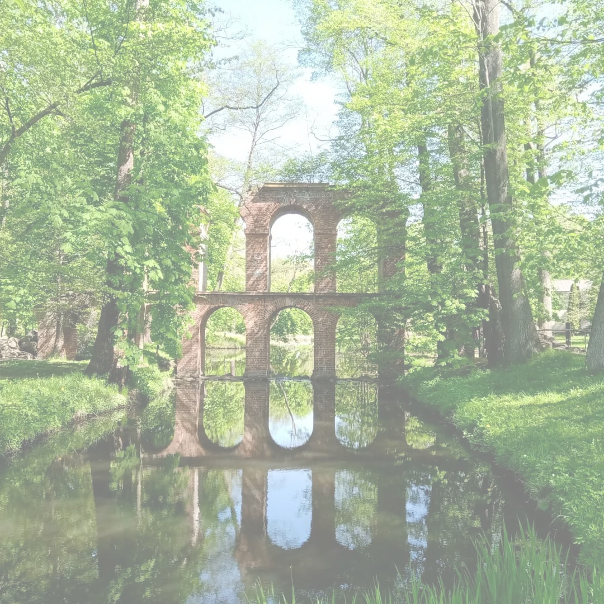

Podstawowe informacje
Arkadia – wieś położona niedaleko Łowicza, w województwie łódzkim, w powiecie łowickim, w gminie Nieborów, nad rzeką Skierniewką.
W 1777 wieś została zakupione przez Helenę Radziwiłłową, żonę Michała Hieronima Radziwiłła, właściciela pobliskiego Nieborowa.
W roku 1778 księżna Helena zainicjowała budowę parku Arkadia.

Budowle w parku
Budowle powstałe w parku to między innymi:
- Grota Sybilli
- Domek Gotycki
- Łuk Kamienny (Łuk Grecki)
- Dom Murgrabiego
- Świątynia Diany (z plafonem J.P. Norblina Jutrzenka)
- Akwedukt
- Przybytek Arcykapłana (z płaskorzeźbą G. Staggi Nadzieja karmiąca Chimerę)
- Mur z Hermami
- Cyrk
Mapa
Do Arkadii można dojechać koleją (przystanek Mysłaków) lub samochodem